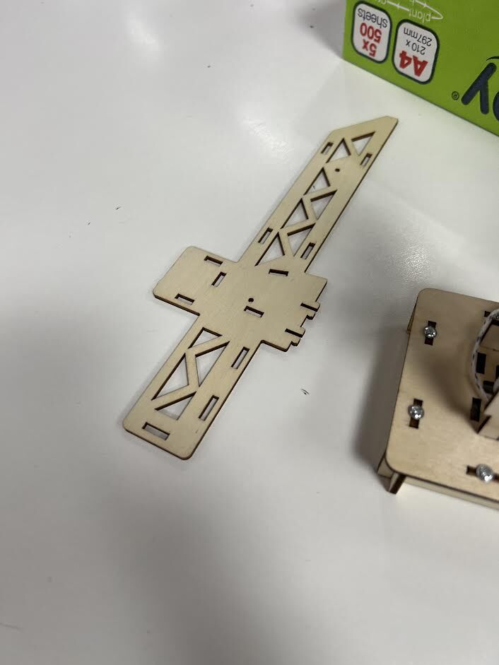
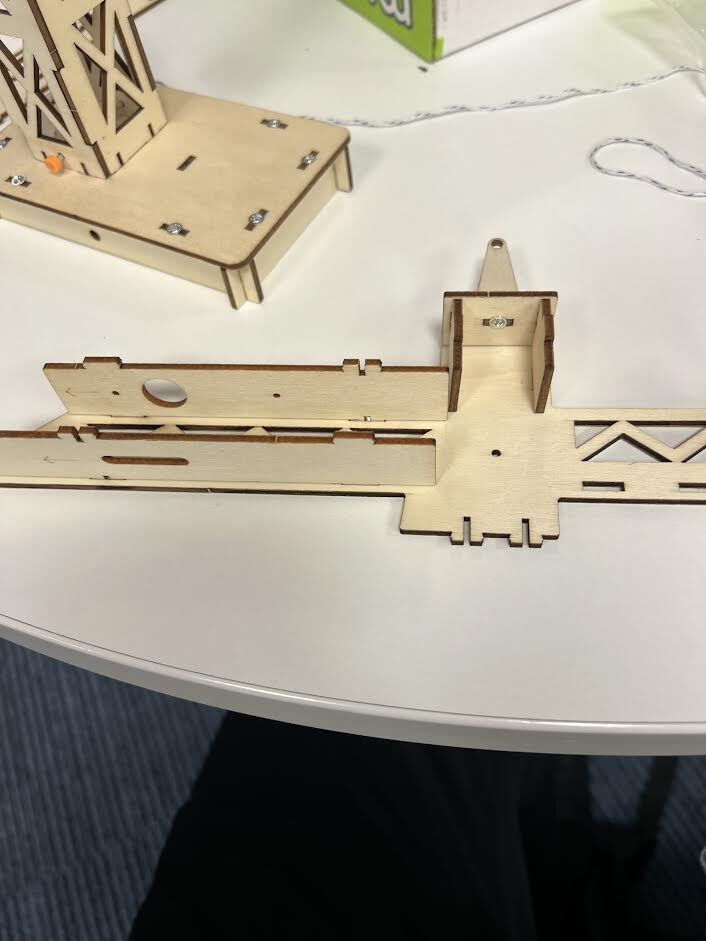
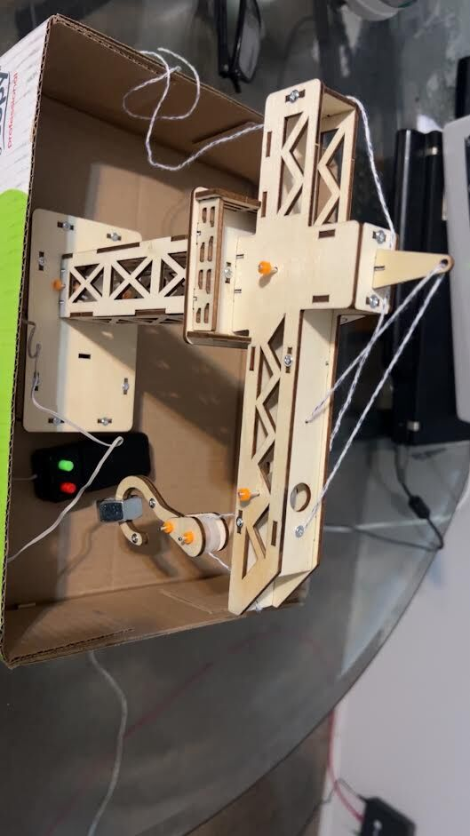

On 7 October our school ran an academic day, and our task was to build a working model crane: a laser-cut plywood kit with a small electric motor that winds a string to raise and lower a hook.

Every part of the crane came as flat, laser-cut plywood panels. The pieces lock together with slots and tabs, and the joints are reinforced with small nuts and bolts. The jib (the long horizontal arm) is built as a hollow box from several panels, and the tower and base go together the same way.

Once the frame was up, we fitted the lifting system: a motor drives a spool (the winch drum), and the string runs from the spool out along the jib to a hook. A small control box with two buttons runs the motor to raise or lower the load.

The most interesting part for me was how much of my A-level Physics showed up in a kit model. The triangular cut-outs in the jib aren't decoration. Triangles keep their shape under load, so a truss pattern makes the arm stiff while removing a lot of material and weight.
The crane also only works if it balances. The load on the hook creates a turning moment about the tower, and the shorter counter-jib on the other side is there to oppose it. This is the principle of moments from Physics, applied to a structure that has to stay upright.
Building something physical is a different kind of problem-solving from writing code. The order you assemble things in matters, small misalignments add up, and you only find out whether your design works when you press the button and the load moves. It was a good reminder that the ideas I study in Maths and Physics are the same ones engineers use to build real machines.